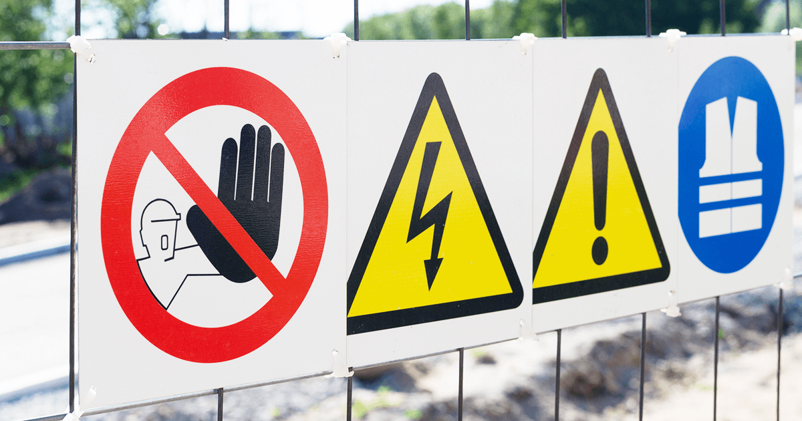
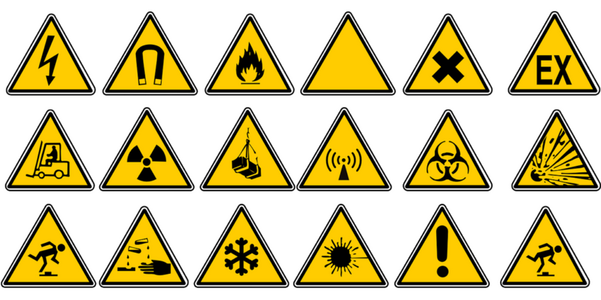

SINALIZAÇÃO DE SEGURANÇA
O QUE É SINALIZAÇÃO DE SEGURANÇA?
Quais os tipos de sinalizações existentes?

Quais são as cores utilizadas para a Sinalização de Segurança?

Rotulagem Preventiva
Desenvolvedor: Vitor Santos